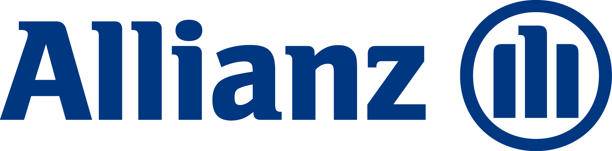

Allianz Suisse
Hauptsponsor des Boxer-Club Bern.
Website besuchen →Unser Clubleben und unser 100-Jahr-Jubiläum wären ohne Unterstützung nicht in dieser Form möglich. Wir danken allen Sponsoren, Partnern und Gönnern herzlich für ihr Engagement.
Unsere Hauptsponsoren begleiten die Ortsgruppe Bern mit besonderem Engagement und erhalten deshalb auch auf der gesamten Website eine prominente Präsenz.

Hauptsponsor des Boxer-Club Bern.
Website besuchen →
Hauptsponsor des Boxer-Club Bern.
Website besuchen →Herzlichen Dank unseren Sponsoren für das 100-Jahr-Jubiläum der Ortsgruppe Bern. Ihre Unterstützung ermöglicht uns, im Jubiläumsjahr zahlreiche besondere Anlässe für unsere Mitglieder und den Boxer zu organisieren.
Hühnerhubelstrasse · 3123 Belp
Website →Katharina Fleischli
Worbstrasse 225 · 3073 Gümligen
Riedmoosstrasse 14 · 3172 Niederwangen
dogger.ch →Rütifeldstrasse 16 · 3294 Büren an der Aare
Website →IG von kynologischen Vereinen und Ortsgruppen von Rasseklubs im Kanton Bern und in angrenzenden Gebieten
Website →Generalagentur Interlaken-Oberhasli · Sandra Zwahlen
Spielhölzli 1 · 3800 Unterseen
Ortschwabenstrasse 4 · 3043 Uettligen
Website →Hauptstrasse 27 · 2575 Hagneck
Website →Personenwagen-Zentrum Bern
Stauffacherstrasse 145 · 3014 Bern-Wankdorf
Gottstattstrasse 24 · 2504 Biel
Website →Buchhof 60 · 3308 Grafenried
hundegitter.ch →Av. des Sports 11 · 1401 Yverdon-les-Bains
Website →Grubenstrasse 11 · 3322 Urtenen-Schönbühl
Website →Werkstrasse 3 · 2553 Safnern
Kulturprozent
Industriestrasse 20 · 3321 Schönbühl
Thunstrasse 5 · 3415 Hasle b. Burgdorf
Säriswilstrasse 13 · 3043 Uettligen
Furtbachstrasse 11 · 8107 Buchs
Auch unseren privaten Gönnerinnen und Gönnern danken wir herzlich für die Unterstützung des Jubiläums.
Dank dieser grosszügigen Unterstützung können wir unser 100-jähriges Bestehen mit besonderen Veranstaltungen feiern – bis zum krönenden Abschluss, dem 100-Jahre-OG-Fest für unsere Mitglieder.